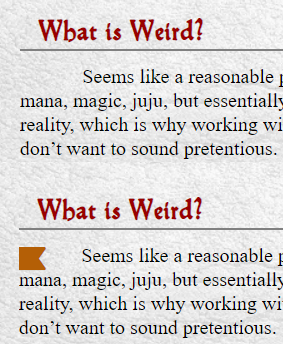

<div class='bookmarkingShell'>
  <h1>Your Bookmarks</h1>

  <div *ngIf="!bookmarkArray" class="loadingArray">
    <div class="triangle"></div>
  </div>

  <div *ngIf="bookmarkArray.length > 0">
    <div class="bookmarkShelfHeading">
      <h3> </h3>
      <h3>Body</h3>
      <div></div>
    </div>
    <div class="bookmarksShell">
      <div *ngFor="let mark of bookmarkArray" class="bookmarkShelf" (click)="goToLink(mark.link, mark.chapter, mark.section)">
        <h3>{{mark.section}}.{{mark.chapter}}</h3>
        <h3>{{mark.body}}</h3>
        <i stopPropagation (click)="deleteBookmark($event, mark.id)" class="fa fa-unlink"></i>
      </div>
  
    </div>
    <i class="fas fa-question-circle positioning" (click)="openHelp()"></i>
  </div>
  
  <div *ngIf="bookmarkArray.length === 0">
    <p class="no-marks-header">You Have No Bookmarks. To Add Them, See Below:</p>
    
  </div>
</div>